수년간의 계획과 연구로
생산에 성공한 고품질의 석채

전통 안료의
명맥을 잇다
Traditional Color of Korea
Traditional Color of Korea
조선 후기 사회적, 문화적 무관심 속에 전통 안료인 천연석채의 생산비법은 100년동안 잊혀졌습니다.
옛 선조들이 미의식이 담긴 채색 문화 유산을 보존하고 전통 색채의 아름다움을 널리 알리고자 2013년 부터 전통 안료에 대한 본격적인 연구와 자료수집이 시작되었으며 마침내 천연 석채의 국내 생산에 성공하였습니다.
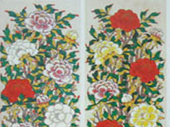
궁중모란도(부분)
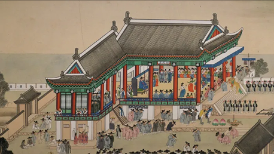
김홍도 ‘평안감사향연도’
옛 정통 방식을 그대로 재현하여 완성된 천연 안료는 현재 전통 단청 복원 사업에도 이용되고 있습니다. 수 백년전 안료와 동일한 재료와 방식을 사용함으로써 단청 고유의 색감과 문화재의 원형 복원 이라는 큰 가치를 부여하고 있습니다.
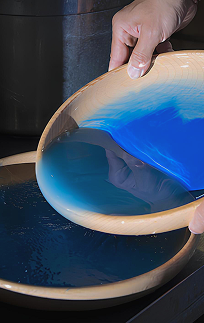
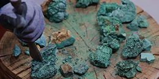
석채의 ‘수비’과정과 공작석
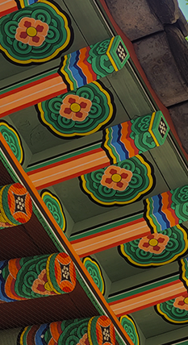
경기전 실록각 단청 (진주시)
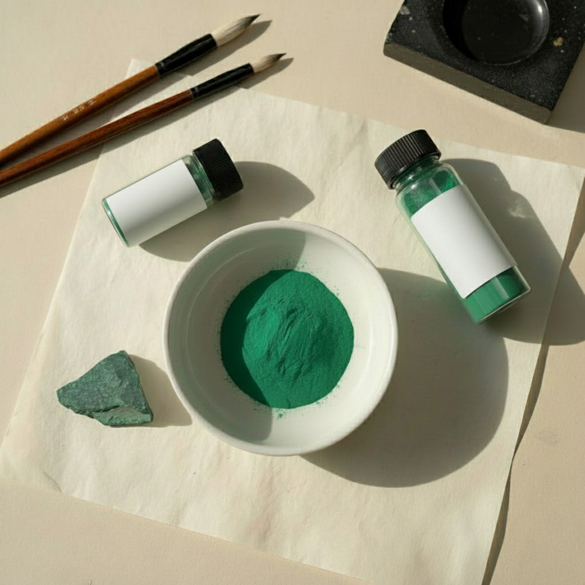
남동광, 공작석등 천연 광물에서 얻은 돌가루로 만드는 석채는 광물 안료 특유의 선명도를 가지고 있으며 색이 변하지 않아 오래된 사찰이나 궁궐의 단청 등 채색 문화재에 사용되었습니다.
돌을 갈아 물과 시간으로 만드는 석채안료는 한국 채색 문화의 미감을 보여주는 귀중한 재료입니다.
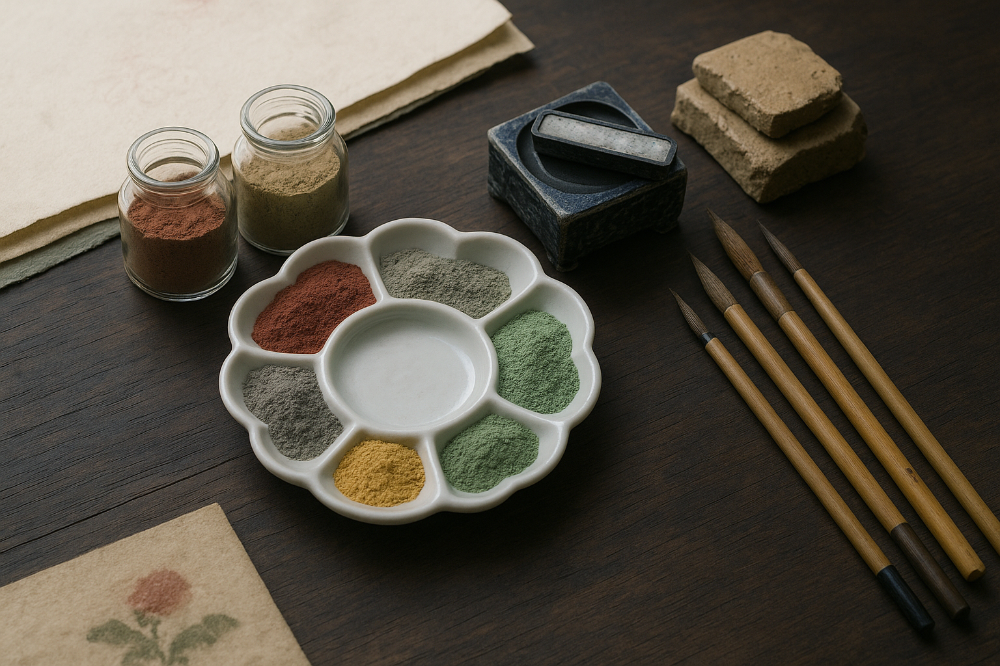
천연토를 기반으로 하여 오랜시간 수비 작업과 불순물 제거로 완성되는 토채는 석채보다 입자감이 있으며 석채나 다른 분채와 쉽게 섞어 쓸 수 있는것이 특징입니다.
자연 본연의 색을 담은 토채는 깊고 단아한 색감과 인공 분채로 표현하기 어려운 천연스러움을 가지고 있습니다.
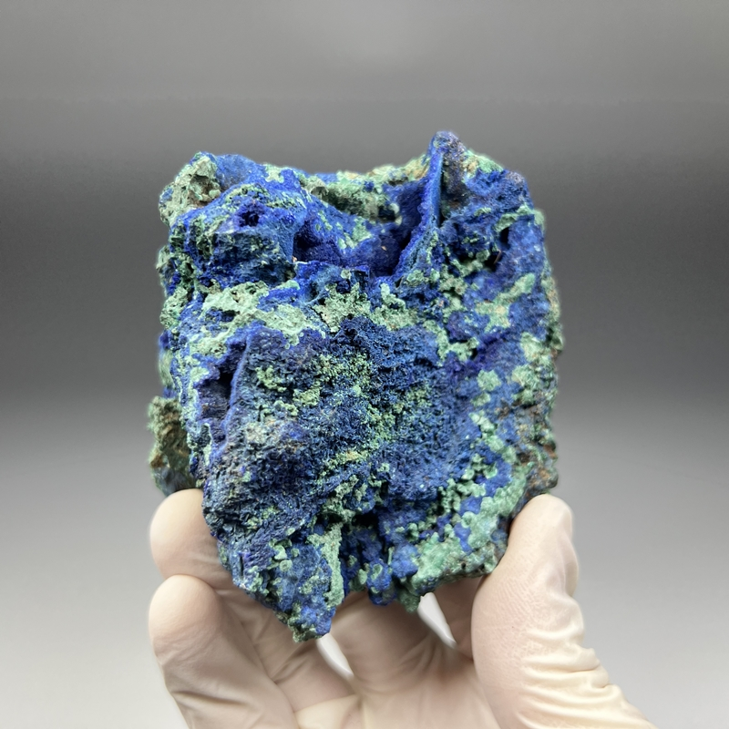
푸른색을 띠는 탄산염 광물로 구리가 포함된 광물이 풍화되면서 공작석과 함께 형성되는 경우가 많다. 푸른색을 띠는 탄산염 광물로 구리가 포함된 광물이 풍화되면서 공작석과 함께 형성되는 경우가 많다.
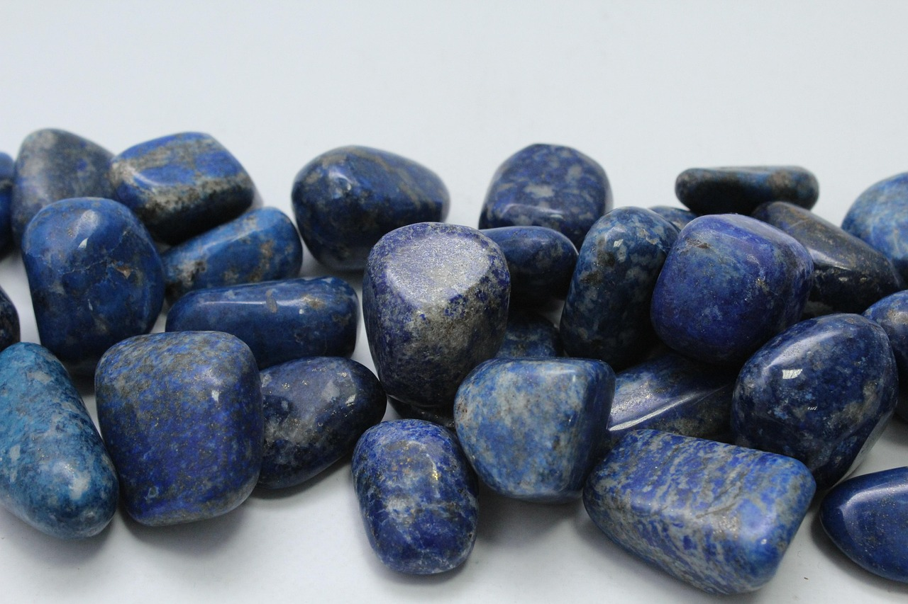
짙은 감청색의 불투명한 준보석으로, 인류 역사상 가장 오래된 보석 중 하나로 여겨진다. 곱게 간 가루는 서양 회화에서 최고급 천연 안료인 '울트라마린'으로 사용되었다.
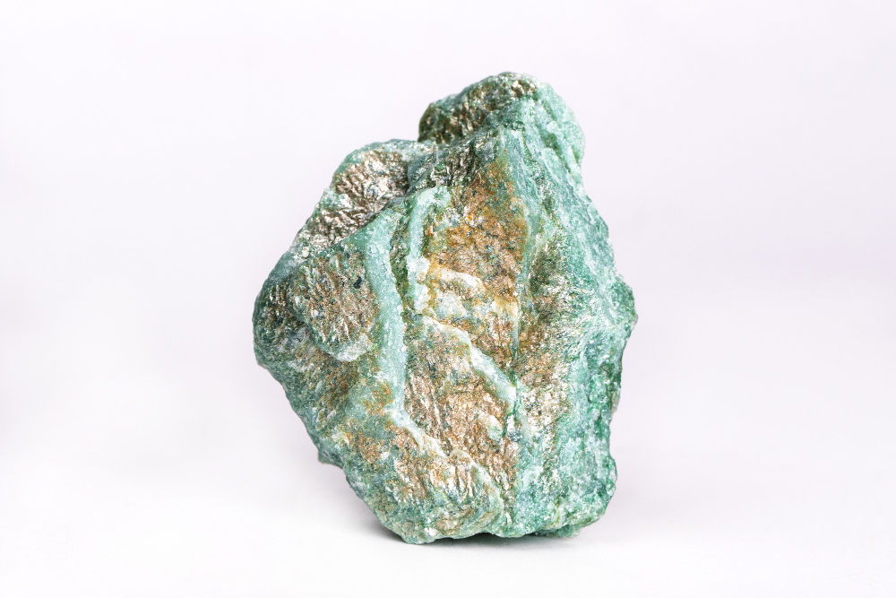
단사정계에 속하는 구리 1차광물이다. 녹색 빛을 띄며. 농담의 무늬가 공작의 꼬리깃털 같으며 장식용, 안료, 불꽃의 원료, 구리광석으로 이용된다.
주요 구성 광물인 녹니석(chlorite)의 함량이 높아 올리브색 또는 비취색을 띠는 녹색 편마암 계열의 변성암이다.상대적으로 무른 광물(모스 경도 2~2.5)로 구성되어 있어 칼로 쉽게 긁힌다.
황금빛 갈색 줄무늬와 비단 같은 광택이 특징으로, 보는 각도에 따라 빛의 띠가 움직이는 '샤토얀시(Chatoyancy)' 효과를 보인다. 이는 마치 호랑이의 눈을 닮았다고 하여 이름 붙여졌으며, 주로 석영 계열의 변성암에 속한다.
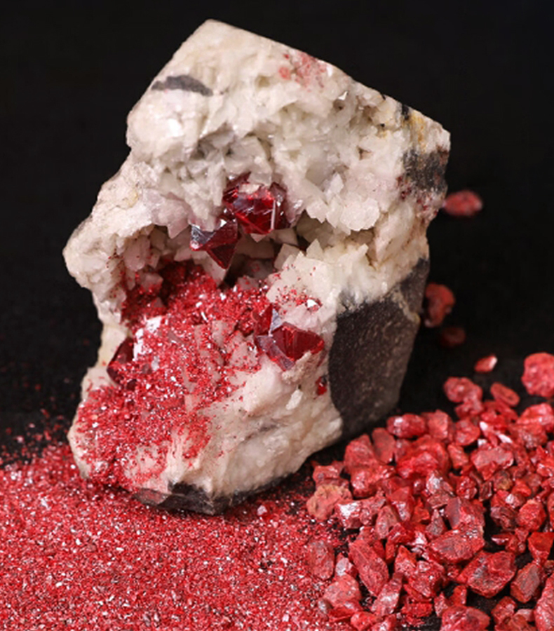
특유의 벽돌 빨강, 계피 빨강 또는 밝은 주홍색을 띠며, 고대부터 선명한 붉은색 안료인 버밀리온(Vermilion)의 재료로 사용되었으며, 수은을 추출하는 주요 광석이기도 하다.